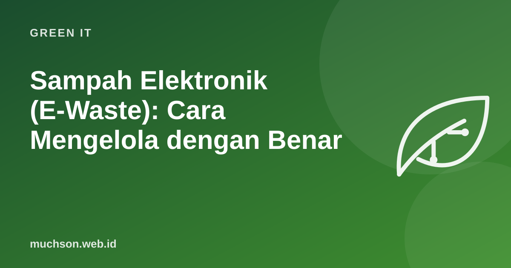

Sampah Elektronik (E-Waste): Cara Mengelola dengan Benar
Di laci banyak rumah ada ponsel lama, charger yang tidak cocok lagi, dan kabel yang entah untuk apa. Menurut Global E-waste Monitor 2024, dunia menghasilkan 62 juta ton sampah elektronik pada 2022, dan hanya 22,3% yang tercatat dikumpulkan serta didaur ulang dengan benar. Sisanya ditimbun, dibakar, atau diolah secara tidak aman.

Mengapa e-waste penting
Urutan pilihan: dari yang paling baik
Hapus data sebelum melepas perangkat
| Perangkat | Langkah |
|---|---|
| Ponsel Android | Cadangkan, keluar dari akun Google (agar perlindungan perangkat tidak mengunci pemilik baru), lalu reset ke setelan pabrik. Perangkat modern dienkripsi sehingga reset menghapus akses ke data. |
| iPhone | Cadangkan, matikan Find My, keluar dari Apple ID, lalu Erase All Content and Settings. |
| Laptop Windows/Mac | Cadangkan, keluar dari akun dan lisensi, gunakan fitur reset/hapus bawaan. Untuk HDD lama, pakai alat penghapus aman atau hancurkan piringannya. |
| Kartu memori & flashdisk | Format penuh, atau hancurkan fisik bila berisi data sensitif. |
Untuk perangkat kantor yang berisi data pelanggan, ikuti prosedur penghapusan data perusahaan dan minta sertifikat penghancuran data dari mitra pengelola.
Di Indonesia
Banyak komponen sampah elektronik dikategorikan sebagai limbah B3 (bahan berbahaya dan beracun) dalam regulasi lingkungan, sehingga pengelolaannya harus oleh pihak berizin. Beberapa pemerintah daerah, produsen, dan toko elektronik menyediakan titik pengumpulan. Tanyakan ke dinas lingkungan hidup setempat atau cari program pengumpulan dari merek perangkat Anda.
Tanya jawab
Apakah baterai bekas boleh dibuang ke tempat sampah biasa?
Apakah menjual ke tukang loak aman?
Apakah charger lama masih berguna?
Sumber dan bacaan lanjut
- ITU dan UNITAR: The Global E-waste Monitor 2024
- UNITAR (2024): Global e-Waste Monitor 2024, electronic waste rising five times faster than documented recycling
- Google: Factory reset your Android device